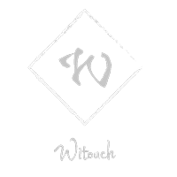

<mat-sidenav-container class="example-container" (backdropClick)="close('backdrop')">
    <mat-sidenav #sidenav (keydown.escape)="close('escape')" disableClose>
        <p><button mat-button (click)="close('toggle button')">Toggle</button></p>
        <p><button mat-button>Acerca De</button></p>
    </mat-sidenav>

    <div class="navbar navbar-dark fixed-top">
        <button class="btn ms-2" mat-icon-button (click)="sidenav.open()"><mat-icon>menu</mat-icon></button>
        <a class=" ms-auto" href="">
            
        </a>
        <button class="ms-auto btn" mat-icon-button>
                            <mat-icon>favorite</mat-icon>
        </button>
        <button class="btn" mat-icon-button> 
                            <mat-icon>search</mat-icon>
        </button>
    </div>
</mat-sidenav-container>